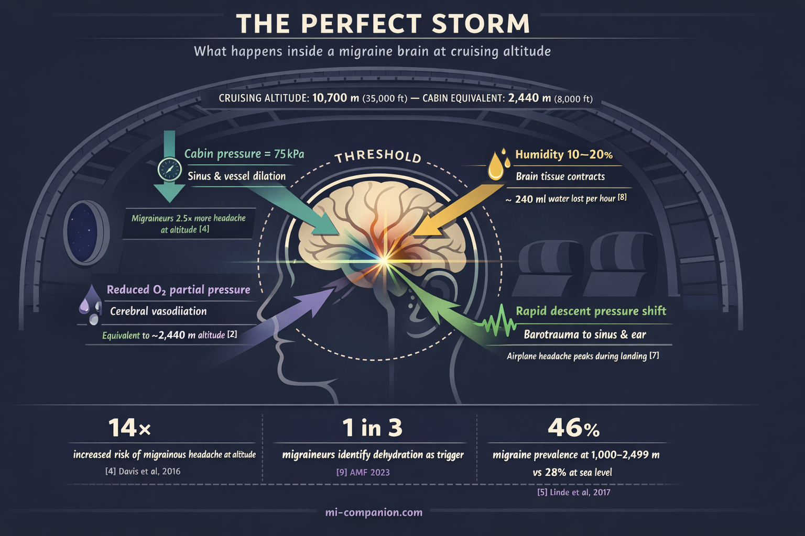
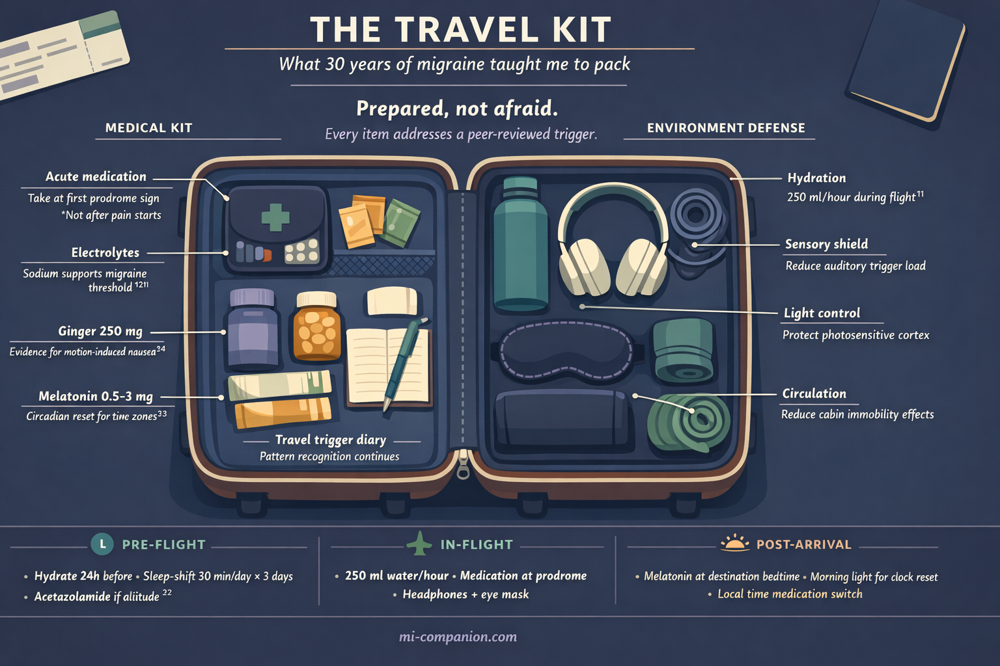

By Rustam Iuldashov
30 years lived experience with chronic migraine | Sources: 29 peer-reviewed references including Cephalalgia (n=27,122), High Altitude Medicine & Biology (n=667), Neurology (n=17), The Journal of Headache and Pain (39 papers) | Last updated: March 8, 2026
Medical Review: This content is based on peer-reviewed research from Cephalalgia, Neurology, European Journal of Neurology, The Journal of Headache and Pain, Scientific Reports, and International Journal of Preventive Medicine.
Important Notice: This article is for informational purposes only and does not replace professional medical advice. The author is not a licensed physician or healthcare professional. Always consult your doctor before making changes to your treatment plan.
Key Takeaways
- Cabin pressure simulates altitudes of 1,830–2,440 meters. People with migraine are 2.5× more likely to develop headache at altitude and 14× more likely to develop a migrainous one.[4]
- You lose roughly 240 ml of water per hour during flight. Start hydrating 24 hours before boarding.[8]
- Even a one-hour clock shift significantly increases migraine frequency. Jet lag across multiple zones amplifies the effect.[13]
- Migraine and motion sickness share neural pathways — migraineurs are inherently more susceptible.[17]
- The “let-down effect” means migraine often strikes after the stressful part of travel, not during it. Build in buffer time and decompress gradually.[28]
- Pre-hydration, gradual sleep adjustment, strategic light exposure, and a well-stocked travel medication kit are your strongest defenses.
- Travel stacks triggers. Manage each one individually before they compound.
The cabin door seals shut. The seatbelt sign clicks on. And somewhere behind your left eye, a pressure begins to build — not from nerves, but from physics.
If you live with migraine, travel is not a vacation. It is a neurological obstacle course. Every altitude shift, every time zone crossed, every skipped water bottle stacks another trigger onto a brain already running close to its threshold. A meta-analysis of over 27,000 headache patients ranked weather-related factors — including barometric pressure — among the top four migraine triggers worldwide.[1] Travel amplifies them all at once.
But here is what three decades of migraine have taught me: you can travel well. Not by shrinking your world, but by understanding exactly what your brain is up against — and arriving prepared.
Your Brain at 35,000 Feet
A commercial airplane cabin is, biologically speaking, a hostile environment for the migraine brain.
Federal regulations allow cabin pressure to simulate altitudes up to 2,440 meters — roughly 8,000 feet.[2] From the moment you reach cruising altitude, you are breathing thinner air. Humidity plunges to 10–20%, drier than the Sahara.[3] And the pressure changes during takeoff and landing happen fast — fast enough to destabilize the small air-filled cavities in your sinuses and inner ear.
For most passengers, this means mild discomfort. For us, it means a trigger cascade.
A study of 667 hikers at 4,349 meters found that people with a migraine history were 2.5 times more likely to develop any headache at altitude — and 14 times more likely to develop a migrainous one.[4]
In Nepal, a population-based study of 2,100 adults showed migraine prevalence nearly doubling — from 28% to 46% — at elevations between sea level and 2,499 meters. Attack frequency doubled. Pain intensity rose by half.[5]
The mechanism is elegant in its cruelty. When atmospheric pressure drops, cerebral blood vessels dilate. In a brain already primed for migraine — with its hyperexcitable cortex and hair-trigger trigeminal nerve — this dilation can tip the balance from stable to attack.[6] Descent is worst: a systematic review of 39 papers confirmed that airplane headaches strike most often during landing, when pressure shifts are steepest.[7]
The Dehydration Trap
Here is a number that should change how you pack: your body loses roughly 240 milliliters of water per hour on a typical flight, mostly through breathing that desert-dry cabin air.[8] A five-hour transatlantic crossing costs you more than a liter — before you have felt thirsty.
One in three migraineurs identifies dehydration as a trigger.[9] A landmark survey found that 36% of migraine patients recognized water deprivation as a precipitant — a finding the researchers noted was, at the time, entirely unrecognized by the medical profession.[10] A randomized trial later confirmed the link: increasing daily water intake improved migraine-specific quality of life by 4.5 points, with nearly half of participants in the hydration group reporting meaningful improvement.[11]
Why does lost fluid trigger pain? The leading theory: when the brain dehydrates, its tissue contracts slightly, pulling away from the skull and activating surrounding pain receptors.[12] In a migraine brain — one where pain pathways are already sensitized — even this subtle shift can ignite the inflammatory cascade.
The takeaway is brutally simple. Hydrate before you board. Not after you feel bad.

Time Zones and the Clock Inside Your Head
Your circadian rhythm — the 24-hour internal clock that governs sleep, hormones, and pain thresholds — is controlled by the hypothalamus and calibrated by light. Cross time zones, and that clock falls out of sync with the world around you.
For migraineurs, this is not mere inconvenience. It is a measurable threat.
A 2023 prospective study tracked 23 adults with episodic migraine through the spring daylight saving time shift — a single lost hour. Migraine incidence jumped from 7.76 to 11.3 attacks per 100 person-days. Deep sleep — the phase when the brain clears metabolic waste most efficiently — dropped significantly.[13] The researchers stated explicitly: these findings apply directly to jet lag and frequent time-zone travel.
The biology runs deep. Melatonin, the hormone driving your sleep-wake cycle, also regulates CGRP — calcitonin gene-related peptide, one of the key molecules in migraine pathophysiology.[15] Disrupt your circadian rhythm, and melatonin timing shifts. CGRP regulation may follow. Preclinical research at King’s College London confirmed that modeling jet lag in laboratory settings directly increases migraine attack susceptibility.[14]
A study of 11,166 migraine app users across 38 countries revealed the critical insight: it is not how long you sleep that predicts tomorrow’s attack. It is how much your sleep deviates from your usual pattern.[16]
Jet lag is deviation by design.
Motion Sickness: Shared Wiring, Shared Vulnerability
If you have ever felt queasy on a winding mountain road, you already know motion sickness. If you also have migraine, you know it far too well.
A study comparing 140 vestibular migraine patients to 287 healthy controls found significantly higher rates of motion sickness in the migraine group.[17] This is not coincidence. Migraine and motion sickness share neural architecture — the brainstem, the vestibular nuclei, the serotonin pathways that modulate both nausea and head pain.[18]
Between attacks, the visual cortex of a migraineur remains hyperexcitable — overreacting to the conflicting motion signals that define motion sickness.[19] Vestibular migraine patients show measurably lower motion perception thresholds: they detect, and are disturbed by, movements so subtle that most people never register them.[20]
For travelers, the implication is clear. Trains, boats, turbulence, winding roads — any of these can trigger not just nausea, but a full migraine attack.

Your Travel Survival Kit
All of this science converges on one practical truth: travel stacks triggers. Altitude, dehydration, disrupted sleep, motion, stress, irregular meals, sensory overload — any one alone might stay below your threshold. Together, they can overwhelm even the best-managed migraine brain.
There is one more trigger that deserves attention — and it strikes at the exact moment you think the worst is over. The stress of travel itself — security lines, gate changes, the fear of missing a connection — floods your body with cortisol. Cortisol is protective while the stress lasts: it suppresses pain and keeps you functional. But the moment you collapse into your seat and the adrenaline drains, cortisol drops sharply. A study from Montefiore Headache Center found that in the first six hours after a decline in stress, the risk of migraine onset was nearly five times higher than at baseline.[28] This “let-down effect” explains why so many travel migraines begin not during the chaos, but in the quiet after it.
Before Departure
Begin hydrating 24 hours ahead. Choose electrolyte drinks over plain water — sodium helps maintain fluid balance and supports the migraine threshold.[21] Pre-shift your sleep schedule by 30 minutes per day toward your destination time zone, starting three days before you leave. If you are flying to high altitude, ask your doctor about acetazolamide (Diamox) — it is the most evidence-supported prophylaxis for altitude-related headache, typically 125–250 mg twice daily, beginning the evening before ascent.[22] And build in buffer time at the airport — rushing elevates cortisol, and the crash that follows is when the migraine strikes.
During Flight
Drink 250 ml of water every hour. Avoid alcohol and excessive caffeine — both accelerate dehydration in the already-dry cabin. Wear compression socks for circulation. Pack noise-canceling headphones and an eye mask — they are not luxury items, they are migraine armor. If cabin smells — perfume, hot food, cleaning products — are triggers for you, keep peppermint oil on hand: a drop on your wrist or a scarf held near your face can override olfactory overload without drawing attention. A clinical trial found that intranasal peppermint oil significantly reduced migraine intensity, comparable to lidocaine.[29] Take your acute medication at the first whisper of prodrome. Not once the pain is established.
Managing Time Zones
Melatonin (0.5–3 mg), timed to your destination’s bedtime, can help reset your circadian clock after crossing two or more time zones. Seek bright light strategically: morning light at your destination advances the clock (eastward travel), evening light delays it (westward).[23] Switch your medication schedule to local time immediately upon arrival.
For Motion Sickness
Sit over the wing on a plane, in the front seat of a car, or facing the direction of travel on a train. Fix your eyes on the horizon. Ginger capsules (250 mg) have evidence for reducing motion-induced nausea.[24] Anti-nausea medication taken 30–60 minutes before travel prevents symptoms far better than chasing them after they start.
⚠️ When to Seek Emergency Help
A headache at high altitude accompanied by confusion, vision changes, loss of coordination, or persistent vomiting may signal high-altitude cerebral edema (HACE) — a life-threatening condition. Descend immediately and call for medical help. Do not wait it out.
If you experience a new, unfamiliar headache during travel that feels fundamentally different from your usual migraine — especially one you would describe as the worst headache of your life — seek emergency care immediately.
✈️ Your Pre-Flight Migraine Checklist — Print & Pack
3 Days Before
- Shift your sleep window. Move bedtime 30 minutes per day toward your destination time zone.
- Audit your travel med kit. Confirm you have: acute medication (triptans/gepants), anti-nausea medication, melatonin (0.5–3 mg), ginger capsules (250 mg), electrolyte sachets, peppermint oil.
- High altitude? Talk to your doctor. If flying above 2,500 m, discuss acetazolamide (Diamox).[22]
- Start a travel trigger diary. Note baseline sleep quality, hydration, and stress level.
24 Hours Before
- Begin pre-hydration. Switch to water with electrolytes — sodium supports your migraine threshold.[21]
- Pack your sensory armor. Noise-canceling headphones, eye mask, peppermint oil, compression socks — in your carry-on, not your checked bag.
Day of Departure
- Build in buffer time. Airport rush raises cortisol. The crash when you sit down is when migraine strikes.[28]
- Pre-treat motion sickness. Ginger (250 mg) or anti-nausea medication 30–60 minutes before your ride.
- Eat a real meal. Skipped meals + travel stress = stacked triggers. Don’t board hungry.
In-Flight
- Choose your seat wisely. Over the wing (plane), front seat (car), facing forward (train).
- Put on compression socks. Support circulation in the low-pressure cabin.
- Hydrate on schedule. 250 ml of water every hour.[8]
- Say no to dehydrators. Skip alcohol and excess caffeine.
- Block hostile smells. Peppermint oil on wrist or scarf.[29]
- Medicate at prodrome, not at pain. First sign — aura, yawning, neck stiffness, light sensitivity.
After Arrival
- Switch medications to local time. Immediately. No gradual transition.
- Use light as medicine. Morning light if you flew east. Evening light if you flew west.[23]
- Melatonin at destination bedtime. 0.5–3 mg to reset your clock.
- Protect the let-down window. First 6 hours are high-risk. Don’t schedule anything demanding. Rest. Hydrate. Arrive before you begin.
⚕️ Important Medical Disclaimer
This article is for informational and educational purposes only and does not constitute medical advice, diagnosis, or treatment. The author, Rustam Iuldashov, is not a licensed physician, neurologist, or healthcare professional. He is a patient advocate with 30 years of personal experience living with chronic migraine.
All clinical claims in this article are sourced from peer-reviewed research published in indexed medical journals. Study designs and sample sizes are noted where applicable.
Always consult a qualified healthcare provider for questions about your individual health, migraine treatment, or medication decisions. If you are considering acetazolamide or melatonin for travel, discuss dosing, timing, and contraindications with your physician before use.
Travel with migraine involves medical decisions that should be personalized to your condition. This content was last reviewed for accuracy on March 8, 2026.
References
- Pellegrino ABW, Davis-Martin RE, Houle TT, et al. “Perceived triggers of primary headache disorders: A meta-analysis.” Cephalalgia, 38(6):1188–1198 (2018). doi:10.1177/0333102417727535. Study design: Meta-analysis. n=27,122.
- CDC Yellow Book. “Air Travel.” Centers for Disease Control and Prevention (2025). Guideline.
- Spengler JD, Wilson DG. “Air quality in aircraft.” Annual Review of Energy and the Environment, 28:567–600 (2003). doi:10.1146/annurev.energy.28.011503.163317. Review.
- Davis C, Reno E, Maa E, Roach R. “History of migraine predicts headache at high altitude.” High Altitude Medicine & Biology, 17(4):300–304 (2016). doi:10.1089/ham.2016.0046. Study design: Cross-sectional. n=667.
- Linde M, Stovner LJ, Zwart JA, Hagen K. “Migraine associated with altitude: results from a population-based study in Nepal.” European Journal of Neurology, 24(8):1055–1061 (2017). doi:10.1111/ene.13330. Study design: Cross-sectional, population-based. n=2,100.
- Okuma H, Okuma Y, Kitagawa Y. “Examination of fluctuations in atmospheric pressure related to migraine.” SpringerPlus, 4:790 (2015). doi:10.1186/s40064-015-1592-4. Study design: Prospective cohort. n=34.
- Bui SBD, Petersen T, Poulsen JN, Gazerani P. “Headache attributed to airplane travel: diagnosis, pathophysiology, and treatment — a systematic review.” The Journal of Headache and Pain, 18(1):84 (2017). doi:10.1186/s10194-017-0788-0. Study design: Systematic review. n=39 papers.
- Chapman LE. “While humid conditions may impact aircraft performance, water is your friend.” Air Line Pilots Association (2025). Guideline/Expert consensus.
- American Migraine Foundation. “Top 10 Migraine Triggers and How to Deal with Them.” americanmigrainefoundation.org (2023). Clinical guideline.
- Blau JN. “Water deprivation: a new migraine precipitant.” Headache, 45(6):757–759 (2005). doi:10.1111/j.1526-4610.2005.05143_3.x. Study design: Cross-sectional survey. n=95.
- Spigt M, Weerkamp N, Troost J, van Schayck CP, Knottnerus JA. “A randomized trial on the effects of regular water intake in patients with recurrent headaches.” Family Practice, 29(4):370–375 (2012). doi:10.1093/fampra/cmr112. Study design: RCT. n=102.
- Fila M, Konopko P, Żołnowska D, et al. “Water and migraine: a systematic review and meta-analysis.” Cephalalgia, 43(2):3331024221147575 (2023). doi:10.1177/03331024221147575. Study design: Systematic review/meta-analysis.
- Gorantla S, Velaga A, Ravisankar A, et al. “The effect of standard time to daylight-saving clock transition on sleep and migraine headaches.” Journal of Clinical Sleep Medicine (2026). doi:10.1007/s44470-025-00006-2. Study design: Prospective observational. n=23.
- Holland PR, Strother L. “Why your sleep and wake cycles can affect your migraine.” The Migraine Trust / King’s College London (2021). Preclinical research summary.
- The Migraine Trust. “Migraine and sleep.” migrainetrust.org (2025). Expert review.
- Khanna P, Wolff HB, Brookes JT, et al. “Investigating the relationship between sleep and migraine in a global sample: a Bayesian cross-sectional approach.” The Journal of Headache and Pain, 24:117 (2023). doi:10.1186/s10194-023-01653-9. Study design: Cross-sectional, app-based. n=11,166.
- Chen X, Zhang Y, Wang L, et al. “Study of clinical correlation of motion sickness in patients with vestibular migraine.” Frontiers in Neuroscience, 16:986860 (2022). doi:10.3389/fnins.2022.986860. Study design: Cross-sectional. n=427.
- Cuomo-Granston A, Drummond PD. “Migraine and motion sickness: What is the link?” Progress in Neurobiology, 91(4):300–312 (2010). doi:10.1016/j.pneurobio.2010.04.001. Study design: Narrative review.
- Antal A, Temme J, Nitsche MA, et al. “Altered motion perception in migraineurs: evidence for interictal cortical hyperexcitability.” Cephalalgia, 25(10):788–794 (2005). doi:10.1111/j.1468-2982.2005.00949.x. Study design: Experimental. n=30.
- Lewis RF, Priesol AJ, Nicoucar K, et al. “Self-motion perception is sensitized in vestibular migraine: pathophysiologic and clinical implications.” Scientific Reports, 9:14323 (2019). doi:10.1038/s41598-019-50803-y. Study design: Experimental. n=68.
- Delgado-López PD, Fernández-de-las-Peñas C, Palacios-Ceña M. “Sodium in Migraine: New Insights into an Old Story.” Cephalalgia, 41(6):759–768 (2021). doi:10.1177/0333102421997280. Study design: Narrative review.
- Gertsch JH, Lipman GS, Harris NS, et al. “Prevention and treatment of acute altitude illness.” Annals of Emergency Medicine, 63(2):224–229 (2019). doi:10.1016/j.annemergmed.2018.10.005. Study design: Clinical guideline/Consensus.
- Burgess HJ. “Using bright light and melatonin to reduce jet lag.” Behavioral Treatments for Sleep Disorders, Ch. 16 (2011). doi:10.1016/B978-0-12-381522-4.00016-4. Study design: Clinical guideline/Review.
- Lien HC, Sun WM, Chen YH, et al. “Effects of ginger on motion sickness and gastric slow-wave dysrhythmias induced by circular vection.” American Journal of Physiology — Gastrointestinal and Liver Physiology, 284(3):G481–G489 (2003). doi:10.1152/ajpgi.00164.2002. Study design: RCT. n=13.
- Farah C, et al. “Impact of barometric pressure changes on the severity, frequency, and duration of migraine attacks: A systematic review.” Cureus, 17(11):e96821 (2025). doi:10.7759/cureus.96821. Study design: Systematic review (PRISMA). n=15 studies.
- Kimoto K, Aiba S, Takashima R, et al. “Influence of barometric pressure in patients with migraine headache.” Internal Medicine, 50(18):1923–1928 (2011). doi:10.2169/internalmedicine.50.5640. Study design: Prospective cohort. n=28.
- Benkli B, Kim SY, Koike N, et al. “Circadian features of cluster headache and migraine: a systematic review, meta-analysis, and genetic analysis.” Neurology, 101(22):e2290 (2023). doi:10.1212/WNL.0000000000207240. Study design: Systematic review/meta-analysis.
- Lipton RB, Buse DC, Hall CB, et al. “Reduction in perceived stress as a migraine trigger: Testing the ‘let-down headache’ hypothesis.” Neurology, 82(16):1395–1401 (2014). doi:10.1212/WNL.0000000000000332. Study design: Prospective electronic diary study. n=17.
- Rafieian-Kopaei M, Hasanpour-Dehkordi A, Lorigooini Z, et al. “Comparing the Effect of Intranasal Lidocaine 4% with Peppermint Essential Oil Drop 1.5% on Migraine Attacks: A Double-Blind Clinical Trial.” International Journal of Preventive Medicine, 10:121 (2019). doi:10.4103/ijpvm.IJPVM_530_17. Study design: RCT, double-blind. n=120.

How We Create Content
- Peer-reviewed sources only. This article cites Cephalalgia, Neurology, European Journal of Neurology, The Journal of Headache and Pain, High Altitude Medicine & Biology, Scientific Reports, Family Practice, Journal of Clinical Sleep Medicine, Frontiers in Neuroscience, Progress in Neurobiology, SpringerPlus, Internal Medicine, Cureus, and International Journal of Preventive Medicine.
- Study transparency. Study design and sample sizes noted for all clinical references.
- Source verification. All claims backed by numbered references with DOI links.
- Experience + Science. 30 years personal migraine experience combined with peer-reviewed evidence.
- Regular updates. Articles reviewed when significant new research emerges.
- No conflicts of interest. No funding from pharmaceutical companies, supplement manufacturers, or travel industry partners.
Track Your Travel Triggers
Migraine Companion helps you log triggers in real time — on the road, in the air, across time zones. Build your personal travel pattern. Know your threshold before you pack.
Last reviewed: March 2026
Next scheduled review: September 2026